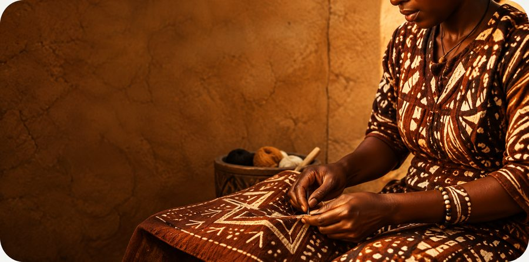

Faire découvrir
Présenter les créations, raconter leur histoire et faciliter la rencontre entre artisans et clients.
Le talent d’ici, partout
Bolono rapproche les artisans, les clients et celles et ceux qui veulent apprendre. Une plateforme pour donner plus de place aux talents et aux idées d’ici.
Des rencontres, des compétences et des opportunités qui font grandir les communautés.

01Valoriser
les talents locaux
02Transmettre
les savoir-faire
03Créer des liens
et des opportunités
Pourquoi Bolono
Créer une activité, trouver ses premiers clients ou transmettre son métier peut être difficile lorsqu’on avance seul. Bolono rassemble les ressources et les personnes qui peuvent aider chaque projet à prendre sa place.
Une même envie
Bolono imagine un espace où les créateurs peuvent présenter leur travail, où chacun peut découvrir des produits et où l’apprentissage se partage. Une initiative tournée vers l’économie locale et les personnes qui la font vivre.
Nos engagementsUn espace pour avancer
Trois façons complémentaires de faire vivre les compétences et les projets locaux.
Présenter les créations, raconter leur histoire et faciliter la rencontre entre artisans et clients.
Accéder à des ressources, se former et transmettre les compétences qui ouvrent de nouvelles voies.
Rejoindre une communauté, partager des idées et faire avancer les projets avec d’autres.
Notre cap
Le numérique prend tout son sens lorsqu’il rend les échanges plus simples et les possibilités plus accessibles.
Donner de la visibilité aux artisans et à la richesse de leurs métiers.
Faire circuler les connaissances et soutenir le développement des compétences.
Favoriser les rencontres, l’entraide et les initiatives ancrées localement.
Et si on faisait grandir les idées ?
Vous êtes artisan, partenaire ou simplement curieux ? Découvrez comment Bolono peut aider les projets locaux à avancer.
Explorer la plateforme